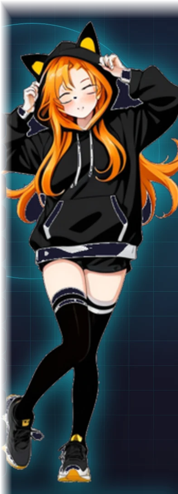
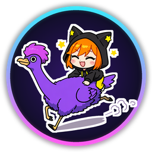

A Gentoo desktop whose desktop IS PosterChan.
Sign in with your Nostr key and it is yours.
apps, files & layout follow your key to any machine
snap, Alt+Tab & multi-monitor, with PosterFox & Steam beside them
it fills, clicks & scrolls the window for you, on your own node
a full Telegram client; the session lives on your node
movies & shows with subtitles and watch progress
create, run & open consoles, managed over Nostr
edit Word, Excel & PowerPoint files
an encrypted notebook on every device; imports Joplin

Firefox without telemetry; every tab its own container & identity; Tor tabs
your files on Blossom, synced between all your devices
Wi-Fi, Bluetooth, per-app volume, and Tor in one tap
Intel, AMD & NVIDIA, with LUKS full-disk encryption